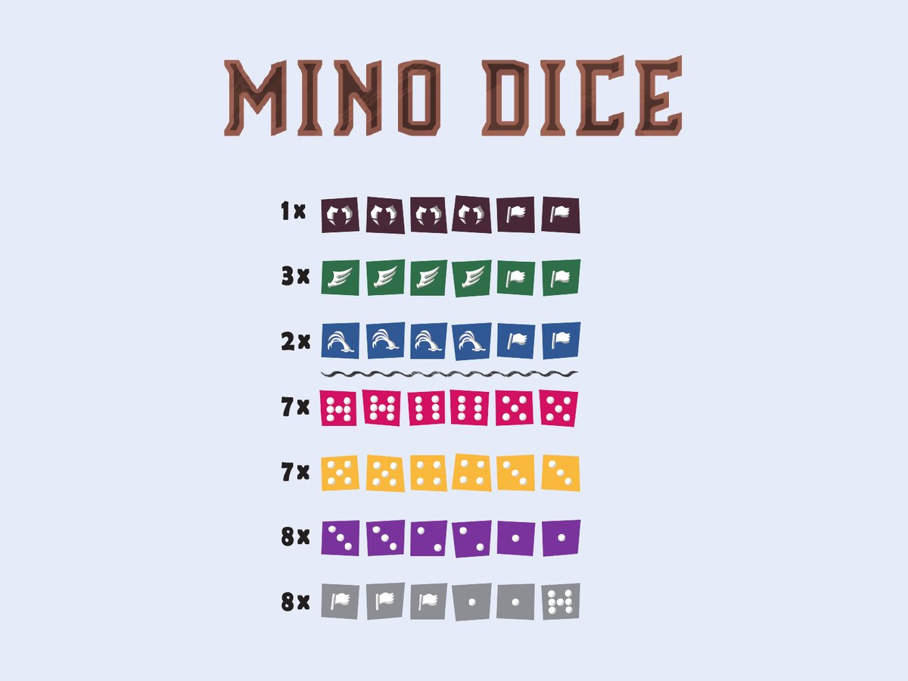
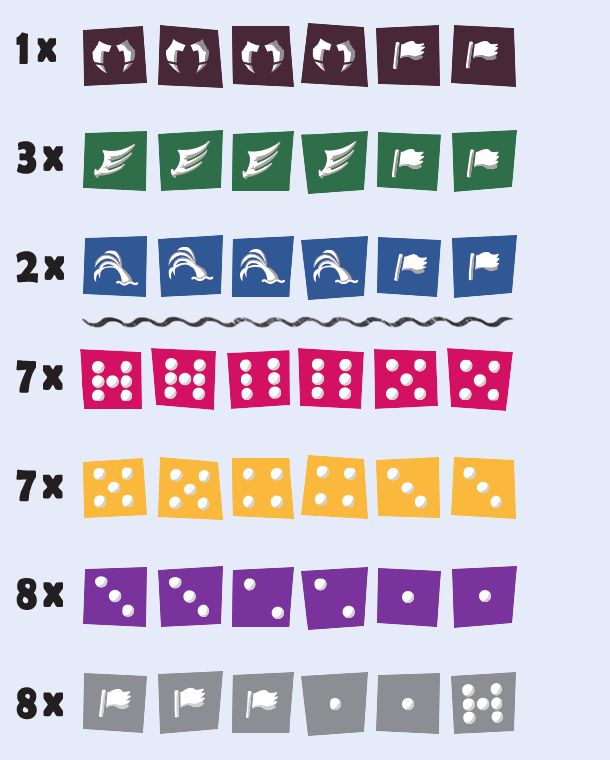
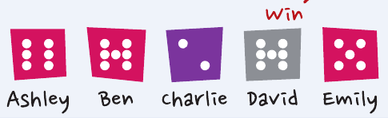
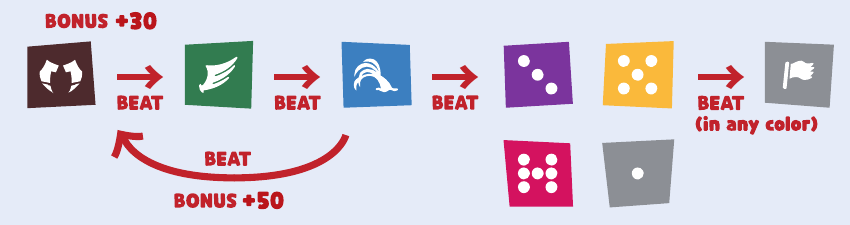

桌游新手入门教学
牛头怪的吃墩骰子游戏：先预测，再赢墩。
3–6 人 · 8 岁以上 · 约 30 分钟
01 · 一句话玩法
1
看过自己的骰子后，大家同时伸出手指，预测这一手能赢几墩。
2
轮流各出一颗骰子，最大的人赢下这一轮，也就是一“墩”。
3
赢的墩数和预测一样才得高分；多了少了都要扣分。
记住一句话：不是赢得越多越好，而是赢得和你说的一样多。
02 · 配件一览
36
6 颗特殊骰 + 30 颗数字骰
6
挡住自己的骰子，别人看不到
1
所有骰子放进去，每手抽取
1
记录每手的叫墩和得分
骰子分两类：特殊骰（角色面）和数字骰（点数面），下一页细看。
03 · 认识骰子

| 骰子 | 数量 | 六个面 |
|---|---|---|
| 牛头怪（特殊） | 1 | 4 面牛头怪 + 2 面白旗 |
| 狮鹫（特殊） | 3 | 4 面狮鹫 + 2 面白旗 |
| 美人鱼（特殊） | 2 | 4 面美人鱼 + 2 面白旗 |
| 红色数字骰 | 7 | 7、7、6、6、5、5 |
| 黄色数字骰 | 7 | 5、5、4、4、3、3 |
| 紫色数字骰 | 8 | 3、3、2、2、1、1 |
| 灰色数字骰 | 8 | 白旗 ×3、1、1、7 |
白旗 = 0 点，是所有结果里最小的。特殊骰和灰骰都有白旗面。
04 · 游戏准备
1
每人在面前立起 1 块挡板。
2
选 1 位玩家负责记分，每手结束后记下叫墩和得分。
3
所有骰子放进布袋，摇匀。
4
选出起始玩家。
牛头怪在迷宫里等猎物时，就在扔骰子——但这可不是靠运气的游戏。
05 · 手、轮、墩
手
第 1 手 1 颗，第 2 手 2 颗……
轮
每轮每人出 1 颗骰子。
墩
赢家拿走这一轮所有的骰子。
1
每人拿 4 颗骰子。
2
一共打 4 轮。
3
每轮每人出 1 颗。
4
4 颗骰子全部用完。
06 · 叫墩
1
从布袋拿出这一手的骰子，放在挡板后面，别人看不到。
2
看过自己的骰子，决定这一手要赢几墩，然后握拳伸向桌子中间。
3
大家准备好后一起喊“GRO-GRO-GROWL!”，喊到最后的“GROWL!”同时张开手指。
4
伸出几根手指就是要赢几墩（6 墩以上用两只手）。计分员马上记在计分本的窄栏里。
07 · 出骰与跟色
1
起始玩家先出 1 颗骰子，之后顺时针每人出 1 颗。
2
这一轮第一颗打出的数字骰决定颜色，其他人能跟就必须出同色。
✓
手上没有这个颜色时，可以出别的颜色。
✓
特殊骰随时可以出，即使你有同色骰也可以；特殊骰的颜色不用跟。
!
第一颗是特殊骰时，看第一颗数字骰的颜色来跟。
注意：跟色只限制你能出哪颗骰子；比大小时不看颜色，只看点数（见下一页）。
08 · 谁赢这一轮
1
全是数字骰：点数最大的人赢，不看颜色。
2
点数一样：后出的人赢。
3
特殊骰的角色面比任何数字都大（见下一页）。
4
白旗 = 0 点，最小；全是白旗时，最先出的白旗赢。

Ashley 红 6 → 大家要跟红色；Ben 红 7；Charlie 没红色出紫 2；David 没红色出灰 7；Emily 红 5。
两个 7，David 后出，所以 David 赢。他拿走这一轮的骰子，放在挡板前，并开始下一轮。
09 · 特殊骰
赢所有数字和狮鹫，但会被美人鱼吃掉。
赢所有数字和美人鱼，但会被牛头怪吃掉。
赢所有数字和牛头怪，但会被狮鹫吃掉。

!
特例：同一轮三种角色都出现时，美人鱼赢。
✓
同一种角色出了两个以上，后出的赢。
10 · 计分
| 情况 | 得分 | 例子 |
|---|---|---|
| 叫的墩数 = 赢的墩数 | 每墩 +20 | 叫 3 赢 3 → +60 |
| 多赢或少赢 | 每差 1 墩 −10 | 叫 5 赢 1 → −40 |
| 叫 0 墩，一墩没赢 | +手数 × 10 | 第 4 手 → +40 |
| 叫 0 墩，却赢了墩 | −手数 × 10 | 第 6 手 → −60 |
叫 0 墩猜错时，不管多赢了几墩，都是扣手数 × 10。
11 · 奖励分
+30
每吃掉 1 颗狮鹫加 30 分。
+50
吃掉牛头怪加 50 分。
只有这一手叫墩猜中才给。被吃掉的特殊骰是白旗面时没有奖励。
Ashley 狮鹫、Ben 牛头怪、Charlie 红 5、David 跟红色出 7、Emily 有红色但选择出美人鱼。
美人鱼克牛头怪，Emily 赢；她这一手猜中的话再加 50 分。
如果 Emily 没出美人鱼，就是 Ben 的牛头怪吃掉狮鹫赢这一轮，猜中的话加 30 分。
12 · 结束
记下叫墩和得分 → 骰子全部放回布袋 → 下一手每人多拿 1 颗骰子，起始玩家顺时针轮换。
| 人数 | 打几手 |
|---|---|
| 3–4 人 | 8 手 |
| 5 人 | 7 手 |
| 6 人 | 6 手 |
最后分数最高（或扣分最少）的人获胜。
简化计分 · 怕算错时用
叫墩猜错得 0 分（不扣分）；没有吃角色的奖励分；其余计分和正式规则一样。
13 · 一页速查
拿出挡板，开始你的第一局吧！